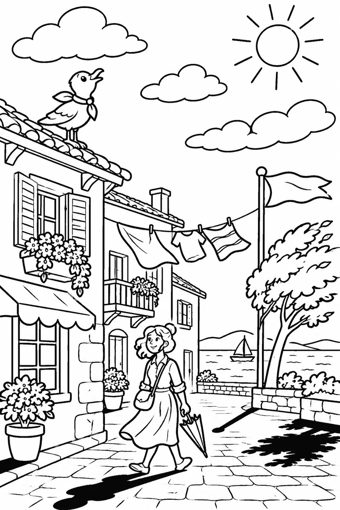
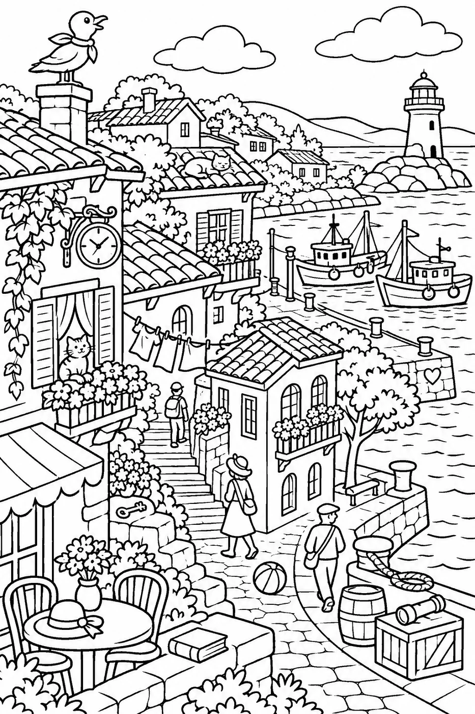
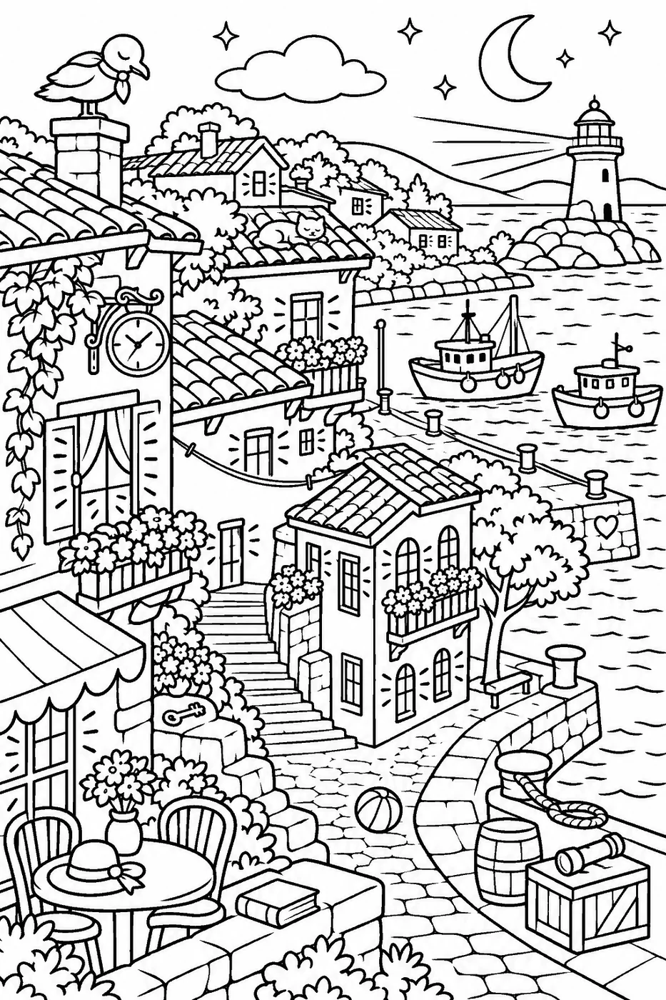
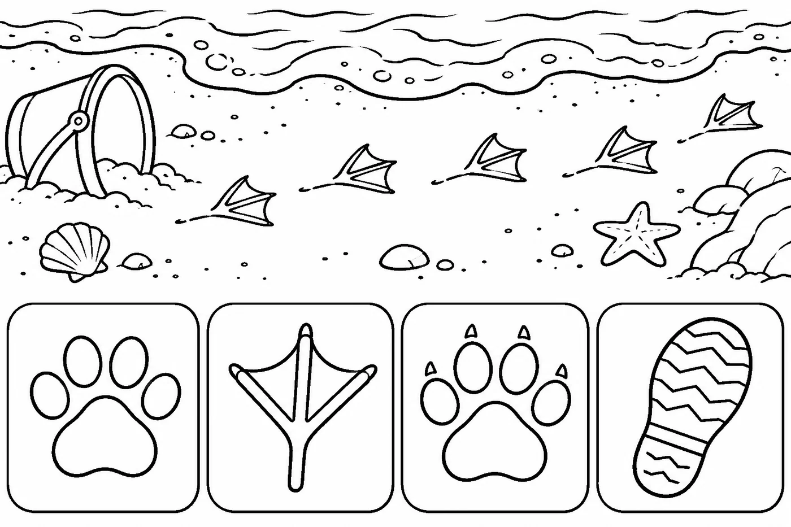
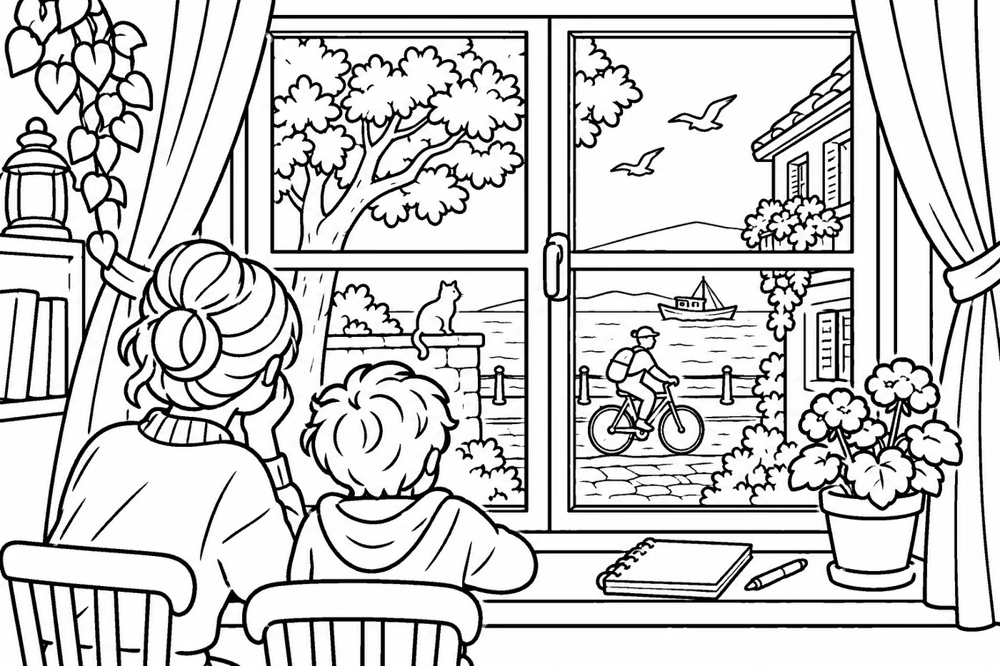
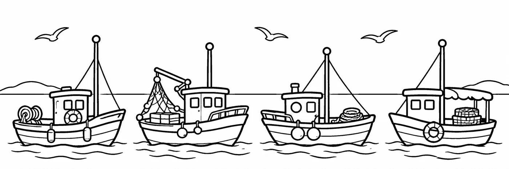
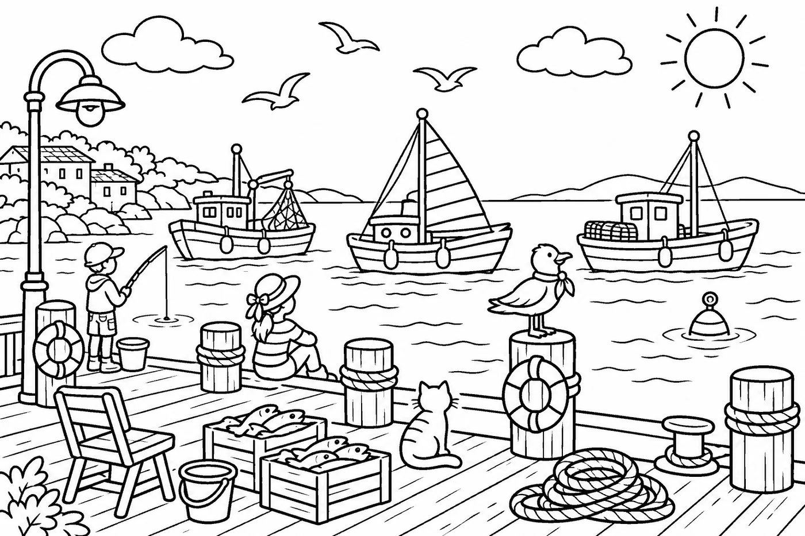
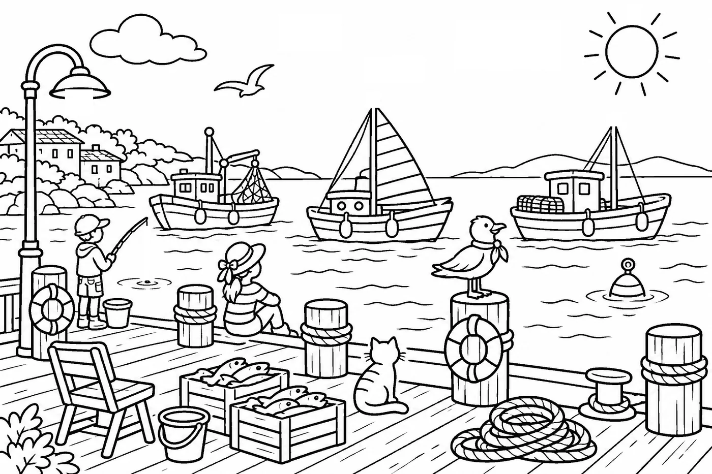
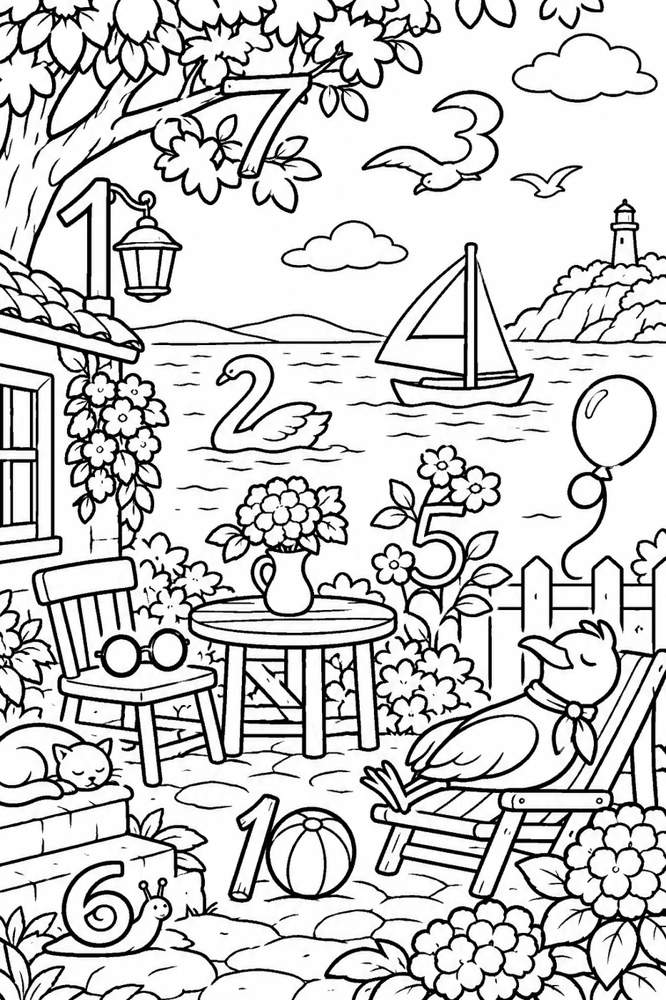
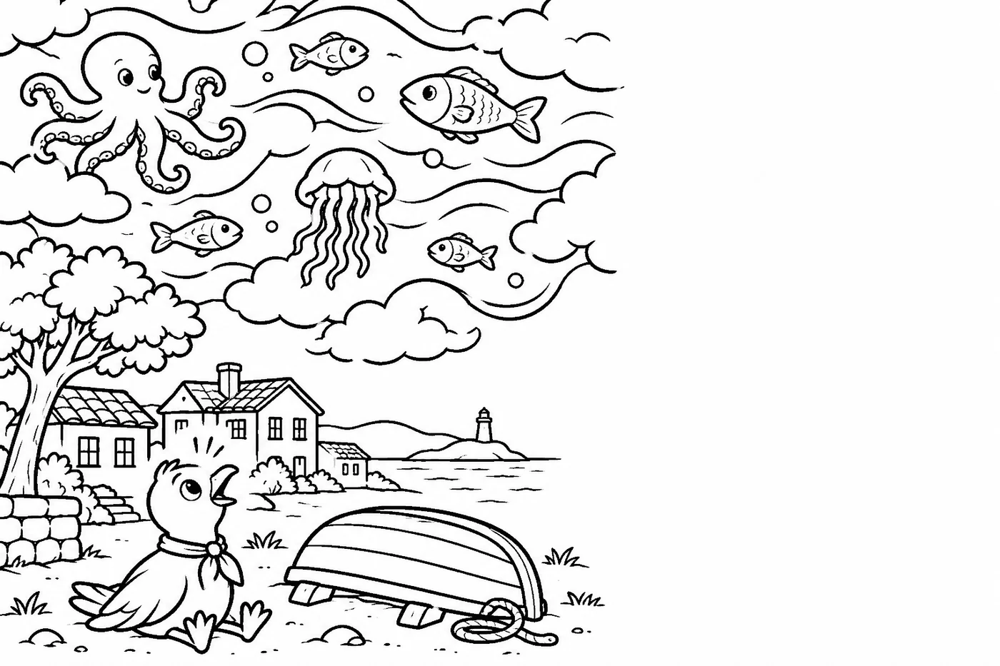

yaş
Martı'nın
Merak
Defteri
Büyükler için · Kısaca
Nasıl kullanılır? Düğmeler görevler arasında gezdirir. Çizgilere dokununca yazılır, kutulara dokununca ✓ çıkar.
Kalem ve boya: sağ üstteki kalemle sayfaya çizilir. Resme dokununca büyür; iki parmakla yakınlaştırılır, dokunulan alan boyanır. Yıldız düğmesiyle kazanılan çıkartmalar sayfalara yapıştırılır.
Dinle: Martı'nın konuşma balonundaki 🔊 düğmesi yönergeyi sesli okur.
Sıra yok. Çocuğunuz Görevler sayfasından istediğini seçsin.
Dışarıdaki görevlerde (adım ölçme, müze, duyu haritası) bir büyük eşlik etsin. Pencere gözlemi kapalı pencere arkasından yapılır.
Cevaplar en sondaki mühürlü zarfta. Önce kendisi denesin.
Ana ekrana ekle: iPhone'da Safari → Paylaş → Ana Ekrana Ekle; Android'de tarayıcı menüsü → Ana ekrana ekle. Defter uygulama gibi açılır, internetsiz çalışır.
Ne saklanıyor? Yazılanlar ve çizimler yalnızca bu cihazda kalır; bize gelmez. Reklam, takip, satın alma düğmesi yoktur.
Etkinlik defteridir; test ya da tanı aracı değildir. Yalnızca satın alan ailenin kişisel kullanımı içindir. Kopyalanamaz, paylaşılamaz. Seslendirme: Yapay zekâ destekli Türkçe ses; metin ve kurgu Uğrak'ındır. © 2026 Uğrak.
Görevler
Bir göreve dokun. Sıra yok, istediğinden başla!
Kâşif Kartın

Yanlış Tahmin


Martı haklı mı?
Resme dikkatle bakınca ne düşünüyorsun? Birini işaretle.
Kanıtlarım: Resimde neyi gördün de böyle düşündün?
Gizli Şehir


Listeyi işaretle
Resimde bulduğun her nesnenin kutusuna dokun. Her nesne sana bir harf kazandırır.
Harfleri bir sonraki sayfada sıraya dizeceksin.
Takıldın mı? İpucuHarfleri diz
Kazandığın harfleri bu sırayla kutulara yaz.
Nereye bakmalı?
İpucu cevabı söylemez; sadece nereye bakacağını gösterir.
Gece
Aynı kasaba gece. Gündüz resmiyle karşılaştır: en az 5 değişiklik bul.

Ne değişti?
Bulduğun değişiklikleri yaz.
Karışmış Harita
Martı'nın haritası rüzgârda altı parçaya ayrıldı. Parçalara iyi bak.
İpucu: Deniz kıyısının çizgisi parçadan parçaya devam eder.
Doğru yere yaz
Her parçanın harfini haritadaki doğru kutuya yaz.
Sonra Martı'nın limandan fenere rotasını parmağınla haritada izle.
Ölçen Kâşif
Odanın bir ucundan öbür ucuna adımlarını sayarak yürü. Sonra bir büyüğün de aynı yolu yürüsün.
| Kaç adım? | |
|---|---|
| Ben | |
| Büyüğüm | |
| Kapı genişliği (benim adımımla) |
Neden farklı?
Oda aynı oda. Sayılar neden farklı çıktı? Herkesin aynı sayıyı bulması için ne yapılabilir?
Gizli Mesaj
Martı bir şişede şifreli mesajlar buldu. Şifre tablosu bu:
Son mesaj
Şimdi kendi şifreni yap: yeni simgeler uydur, bir arkadaşına mesaj yaz.
Yanlış Tahmin · 2

Kumdaki izleri, yandaki örneklerle karşılaştır.
Hangi ayrıntı?
Tabloyu doldur: sayı yaz ya da var / yok.
| Kedi | Martı | Köpek | Çocuk | |
|---|---|---|---|---|
| Parmak sayısı | ||||
| Tırnak izi | ||||
| Perde (zar) |
Bence izler şunun:
Gözlem Günlüğü
Bir büyüğünle pencerenin önüne otur (pencere kapalı kalsın). 10 dakika dışarıyı izle.

Ne gördün?
| Hareket eden şeyler | Duyduğum sesler |
|---|---|
En şaşırtıcı gözlemim:
Kendi Haritan
Evinden okuluna ya da en sevdiğin parka giden yolu çiz.
Lejant
Haritacılar her simgeyi lejantta açıklar. Simgeni küçük kutuya çiz, yanına ne olduğunu yaz.
Yarım Hikâye
Üç kareye sırayla bak. Sonra ne oldu?
4. kare
Altına bir cümle yaz:
Hikâyeyi sen yaz
Devamı ve adı
Hikâyemin adı:
Bayrak Bulmacası
Dört teknenin bayrakları karışmış. Tekneler soldan sağa 1, 2, 3, 4.

- Yıldızlı bayrak en solda da değil, en sağda da değil.
- Çizgili bayrak, yıldızlı bayrağın hemen sağındaki teknede.
- Kareli bayrak en soldaki teknede değil.
- Puantiyeli bayrak ile kareli bayrak yan yana teknelerde.
✓ ve ✗ koy
İpuçlarına göre tabloya ✓ ve ✗ koy. Sonra bayrakları resimdeki direklere çiz.
| 1 | 2 | 3 | 4 | |
|---|---|---|---|---|
| Yıldızlı | ||||
| Çizgili | ||||
| Kareli | ||||
| Puantiyeli |
Neden Böyle?
Tahminim:
Sonra bir büyüğünle konuşun. Açıklama zarfta; tahmin etmeden bakma!
Neden Böyle?
Tahminim:
Sonra bir büyüğünle konuşun. Açıklama zarfta; tahmin etmeden bakma!
Neden Böyle?
Tahminim:
Sonra bir büyüğünle konuşun. Açıklama zarfta; tahmin etmeden bakma!
Tasarımcı
Martı'ya rüzgârda uçmayan, yağmurda ıslanmayan bir yuva tasarla. Çiz, parçalarını oklarla göster.
Malzemelerim
Hangisi Değişti?
Alttaki resimde 8 fark var. Bulduklarını alttakinde daire içine al.


Sayı Avı
1'den 10'a kadar bütün rakamlar şekillerin içine saklandı.

Bulduklarım
Bulduğun her rakama dokun.
Benim Müzem
Topladığın 3 küçük şeyi (yaprak, taş, kabuk, düğme…) çiz ve etiketle.
Ters Düşün

Bu ters dünyayı resimde tamamla.
Ya insanlar?
Bu dünyada insanlar nasıl yaşardı? İki fikir yaz.
Zor Labirent
Martı yukarıdaki girişten fenere ulaşmalı. Önce gözünle, sonra kalemle.
Kelime Zinciri
Her kelime, öncekinin son harfiyle başlar. MARTI → İ ile başlayan bir kelime…
Yeni kural
Bu sefer yalnız deniz ve kıyıyla ilgili kelimeler kullan. Kaç kelime yazabildin?
Yanlış Tahmin · 3
Balıkçı bir hafta boyunca kaç kasa balık sattığını çizdi.
Grafiği oku
1. En çok balık hangi gün satıldı? Kaç kasa?
2. Pazar günü kaç kasa satıldı?
3. Martı'nın hatası ne? "Çünkü" kısmı grafikte görünüyor mu?
Röportaj
Bir büyüğünle röportaj yap. Soruları sor, cevapları kısaca not al.
Konuğum:
1. Senin çocukluğunda en sevdiğin oyun neydi?
2. Yaşadığın yerde eskiden olup şimdi olmayan bir şey var mı?
Devam
3. Hayatında gördüğün en güzel manzara neresiydi?
4. Benim yaşımdayken neyi merak ederdin?
5. Benim sorum:
Kendi Bulmacan
5 kelime seç, ızgaraya yatay, dikey ya da çapraz yerleştir. Boş kutulara rastgele harf yaz.
Saklı kelimelerim
Duyu Haritası
Bir yere git. Gözlerini bir dakika kapat, sonra aç. Her duyun için yaz ya da çiz.
Neredeyim:
Devam
Şehrin Anahtarı
Martı kasabadan ayrılmadan önce sana bir mesaj bıraktı. Şifre tablosu:
Sandıkta ne var?
Limana gittin, iskelede bir sandık buldun. İçinde ne vardı? Çiz ve anlat.
Merak Kâşifi
Kanıt topladın, şifre çözdün, Martı'nın yanlış tahminlerini yakaladın.
Mühürlü Zarf
Bu zarfta cevaplar var. Önce kendin dene!
Takıldıysan bir büyüğünle birlikte aç.
Martı haksız. Güneş parlıyor, gölgeler keskin; çamaşırlar kurumak için asılmış, rüzgârda uçuşuyor; kadın şemsiyesini kapalı taşıyor. Bulutlar var ama yağmur işareti yok.
Kelime: KEŞİFLER. Martı'nın "KEDİLER" tahmininde Ş yerine D var, bir harf de eksik. Nesnelerin yeri bir sonraki cevapta.
Karışmış harita: üst sıra soldan sağa B · F · D; alt sıra E · A · C.
Gizli mesaj: 1. DENİZ · 2. LİMAN · 3. GEL
İzler: üç ön parmak ve aralarında perde var: martı izi. Kedi izinde dört parmak ve yuvarlak taban yastığı olur, tırnak izi genellikle görünmez.
Bayrak bulmacası: 1. tekne puantiyeli, 2. kareli, 3. yıldızlı, 4. çizgili.
Farklar: uçan bir martı, sağdaki bulut, güneşin üst ışını, ortadaki teknenin direk topu, olta ipi, sağdaki teknenin direk topu, ikinci uçan martı, fener lambasının ampulü.
Sayı avı: 1 fener direği, 2 kuğu, 3 uçan martı, 4 yelken ve direk, 5 çiçek sapı, 6 salyangoz, 7 ağaç dalı, 8 gözlük, 9 balon ve ipi, 10 sopa ve top.
Grafik: En çok cumartesi, 25 kasa. Pazar 14 kasa. Martı hem günü yanlış okudu hem de grafikte olmayan bir neden uydurdu.
Son şifre: LİMANA GEL
1. Rüzgâra karşı dönünce tüyleri düzgün kalır, rüzgâr tüylerin altına girip onu üşütmez; havalanmak da kolaylaşır.
2. Yağmur kayalardan çok az tuz çözer, nehirler bunu denize taşır. Güneş denizi buharlaştırır ama tuz kalır; milyonlarca yılda biriken tuz denizi tuzlu yapar.
3. Işık sesten çok daha hızlıdır. Ses havada saniyede yaklaşık 340 metre gider, bu yüzden gürültü sonra gelir.
Birlikte Keşif Notları
Büyükler için. Test ya da değerlendirme değildir; sadece birlikte gözlemlemek ve konuşmak için.
Ölçen kâşif: farklı adım sayıları beklenen sonuçtur; amaç ortak ölçü birimine neden ihtiyaç duyulduğunu keşfetmektir. Hikâye, tasarım ve ters dünya sayfalarında her fikir geçerli.